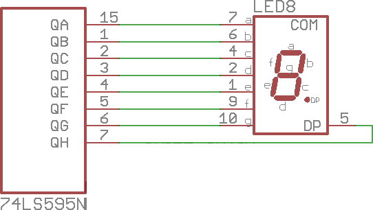
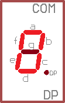

Lab 4:
Using a shift register
Information
In the last lab, you used the Raspberry Pi's General Purpose Input/Output pins for both input and output. For input, your code checked to see if any of 4 buttons were pressed. For output, your code turned on up to 8 LEDs. Each of these buttons and LEDs are connected to an individual GPIO pin. However, direct connections like this are actually an inefficient method of connecting devices to the Pi. Why? Look at this pin diagram from
pinout.xyz:

Some of these pins have special functions that others do not have:
- UART
- Universal Asynchronous Receiver/Transmitter. The old school way of communicating to other devices. With the right adapter, it can connect to RS-232 devices that can either access the PI's console or allow the PI to access the console of, say, a Cisco switch.
- BCM 14 is the UART Tx line
- BCM 15 is the UART Rx line
- I²C
- Inter-Intergrated Circuit, which is supposed to be written as I²C, but is often written as I2C since super scripts are too hard. The abbrivation is actually pronounced as "I-squared-C" so don't call it "I-two-C" if you don't want to be made fun of behind your back! The PI has two I²C channels (0 and 1).
- BCM 2 is the Serial Data line (SDA) for channel 1
- BCM 3 is the Serial Clock line (SCL) for channel 1
- BCM 0 is the Serial Data line (SDA) for channel 0
- BCM 1 is the Serial Clock line (SCL) for channel 0
- Note: The HAT breaks out the I²C channel 1 lines, but the channel 0 lines are connected to the EEPROM chip below the buttons, next to the camera slot.
- SPI
- Serial Peripheral Interface. The PI has two SPI channels (0 and 1), but you have to chose your own chip select pin for channel 1.
- BCM 10 is the Master Out Slave In (MOSI) line for channel 0
- BCM 9 is the Master In Slave Out (MISO) line for channel 0
- BCM 10 is the Serial Clock (SCLK) line for channel 0
- BCM 8 is the Chip Enable 0 (CE0) line for channel 0
- BCM 7 is the Chip Enable 1 (CE1) line for channel 0
- BCM 20 is the Master Out Slave In (MOSI) line for channel 1
- BCM 19 is the Master In Slave Out (MISO) line for channel 1
- BCM 21 is the Serial Clock (SCLK) line for channel 1
- Note: Can use another GPIO pin as another Chip Enable pin, but your code has to be written a little differently.
- Note: The HAT only breaks out the channel 0 pins. Channel 1 MOSI is used for Switch 2, Channel 1 SCLK is used for Switch 3, and Channel 1 MISO is used for LED2.
- 1-Wire
- The 1-Wire interface uses 1 wire for communication, if that wasn't obvious.
- BCM 4 is the Data line.
The HAT was designed to breakout these special connections so that
someone (hint, hint) could more easily use them to extend the functionality of the HAT and build a neat project. These special lines can also be used as normal GPIO pins, but access to that special feature is lost. Because we're saving those pins for their special use, there aren't a lot of options to add more functionality to the HAT. So, how many pins do we still have to work with? We know that the PI 2 (and newer) has 40 pins. Let's count the specialized pins, pins for the LEDs, pins for the buttons, pins for power and ground:
- 8 LEDs
- 4 Buttons
- 2 UART lines
- 4 I²C lines (2 channels)
- 5 SPI lines (channel 0 only, remember that the channel 1 pins were used for buttons or LEDs)
- 1 1-Wire line
- 2 5 volt power lines
- 2 3.3 volt power lines
- 8 Ground lines
So, do some fifth grade math and figure out how many pins are left. Alright, fine,
I'll do it for you: there are 4 pins available.
Now, look at your HAT. Look at the 7 segment display. How many LEDs in the display are there? 8: the 7 segments of the digit and the decimal point. We only have 4 pins to drive 8 LEDs. How would we accomplish this? We use a shift register!
What's a shift register?
It is a register that you shift bits into!
Alright, fine a more detailed explanation: a shift register is an integrated circuit that allows a microcontroller or other device to expand input or output by reading or writing data in serial. They take data one bit at a time, store it in a register, and shift the existing values over over.
The HAT uses a
74HC595N shift register, the black package next to the seven segment display. It requires at least 3 lines to drive:
data,
clock, and
latch. There are an optional 2 lines that can be used:
output enable and
clear register. If these aren't used, tie
output enable to ground and
clear register to 5v. It can be daisy chained to more shift registers, allowing for an arbitrary number of extra pins. The HAT doesn't use the two optional lines, since we only have 4 pins available and it would be more complicated to program. Review the schematic for the 7 segment display functional area of the HAT:

Instructions
- Download the
7seg.py code from the Resources section. Run it and use ctrl+c when you're ready for the next step.
- Open the code in
nano to analyze it.
- Understanding the code:
- The shift register only needs 3 pins:
data, clock, and latch. We'll use BCM 17 for data, BCM 27 for clock, and BCM 22 for latch.
#Pins for shift register
dataPin = 17
clockPin = 27
latchPin = 22
- Next is an array full of hexidecimal values. We use this so that we can just call
segments[] to display a certain digit on the 7 segment display and not need to remember what bits need to be shifted out to the register.
- But, how do we know which values will display which character? Simple: the schematic and binary. This is the relevant part of the schematic:

- According to the schematic above, the following pins on the shift register map to the LEDs in the seven segment display:
| Shift register pin |
QA |
QB |
QC |
QD |
QE |
QF |
QG |
QH |
| Segment |
a |
b |
c |
d |
e |
f |
g |
DP |
- With the above chart, we know which shift register pins we need to turn on to turn on a given display segment. Next, we need to know which segments we need to turn on to show the digit we want. To do that, let's work out how to display the character
0. We'll use 0 to represent OFF and 1 to represent ON:
|  |
Shift register pin |
QA |
QB |
QC |
QD |
QE |
QF |
QG |
QH |
| Segment |
a |
b |
c |
d |
e |
f |
g |
DP |
| Is On: |
1 |
1 |
1 |
1 |
1 |
1 |
0 |
0 |
- Now we know what the binary value is that represents the
0 character, but binary is a little inconvenient to type and is easy to make a mistake, so let's convert it to decimal. To convert binary to decimal, we take the decimal value of each binary position and add the values of positions with a 1.
Information
The lowest value bit is the one all the way to the right and is thus called the Least Significant Bit (LSB). The highest value bit is the one all the way to the left and is thus called hte The lowest value bit is the one all the way to the right and is thus called the Most Significant Bit (MSB).
Information
Since we're using a
Base-2 system, each position's value is worth 2x as much as the last, where in decimal (Base-10) each position is 10x the last. So, from
LSB to
MSB, the decimal values of binary positions go:
1,
2,
4,
8,
16,
....
|
Shift register pin |
QA |
QB |
QC |
QD |
QE |
QF |
QG |
QH |
| Segment |
a |
b |
c |
d |
e |
f |
g |
DP |
| Is On: |
1 |
1 |
1 |
1 |
1 |
1 |
0 |
0 |
| Decimal value: (add if bold) |
128 |
64 |
32 |
16 |
8 |
4 |
2 |
1 |
- So, what's 128+64+32+16+8+4? 252!
- Decimal is great and all, but sometimes even decimal numbers start to get out of hand, so let's convert our binary number into a hexidecimal number by using the following chart:
| Binary |
0000 |
0001 |
0010 |
0011 |
0100 |
0101 |
0110 |
0111 |
1000 |
1001 |
1010 |
1011 |
1100 |
1101 |
1110 |
1111 |
| Hexidecimal |
0 |
1 |
2 |
3 |
4 |
5 |
6 |
7 |
8 |
9 |
A |
B |
C |
D |
E |
F |
| Binary value to change: |
1111 |
1100 |
| Hexidecimal value: |
F |
C |
| Full hexidecimal value: |
0xFC |
- Now we have the hexidecimal value of
FC, but we'll have to write it as 0xFC. The 0x makes sure that we don't mistake a hexidecimal value for a decimal value.
- Now, look at your code, at the first value in the array created:
segments = [0xFC, 0x60, 0xDA, 0xF2, 0x66, 0xB6, 0x3E, 0xE0, 0xFE, 0xF6]
- See the
0xFC? Looks familar, doesn't it? Try doing the process we just did to find out what the rest of the values will display.
Information
Even though these values are written in hexidecimal (or even if you wrote them in decimal), remember that computers only understand binary, any other systems are purely there to make it easy for us puny humans!.
- Before looking at the code to output this number, we need to understand what we actually have to do:
- Get a single bit of the number we want.
- Turn the GPIO pin connected to the shift register's
data pin off if that bit is 0 or on if it is 1. This will tell the shift register what number we want to shift into the registers.
- Toggle the GPIO pin connected to the shift register's
clock pin on and off. This tells the shift register to take the value on the data pin (0 or 1) and shift it into the register. The shift register will not change the values in the register until this pin is toggled!
- Repeat steps 1, 2, and 3 until all of our bits have been shifted out.
- Toggle the GPIO pin connected the the shift register's
latch pin on and off. This tells the shift register to take the values in the storage register and put them in the output register, to actually output them. This line could be tied to the to the 5v line to always immediately show the bit shifted in, but this means that the wrong output could occur on each pin. In a seven segment display, this may manifest as a flickering. In other, more reactive components could result in... unwanted action.
- We know what we need to do now. So, how do we get a single bit of
0xFC at a time? The schematic and bitwise operations! What's a bitwise operation? It is an operation that acts on the actual bits that make up the number in memory. This is low level manipulation of values!
- Python suppports the following bitwise operations:
Assume the following variable has been declared:
i = 0xFC
|
>> |
Shift bits to the right by the given amount of bits. Puts a 0 in the newly opened position. |
i >> 1: 1111 1100 becomes 0111 1110
Note: the LSB is lost after the bit shift. |
<< |
Similar to >>, but shifts bits to the left instead. |
i << 1: 1111 1100 becomes 1111 1000
Note: the MSB is lost after the bit shift. |
& |
Does a "bitwise AND" where the returned value's binary representation only has 1's where both of the original values had a 1. |
i & 7: 1111 1100 is AND'd with 0000 0111 (decimal: 7) to create 0000 0100. |
| |
Does a "bitwise OR" where the returned value's binary representation has 1's where either of the original values had a 1. |
i | 7: 1111 1100 is OR'd with 0000 0111 (decimal: 7) to create 1111 1111. |
~ |
Returns the complement of the value, where the binary representation has been flipped: 1's become 0's and 0's become 1's. Also sometimes called NOT. |
~i: 1111 1100 becomes 0000 0011. |
^ |
Does a "bitwise exclusive OR" otherwise known as an "XOR." It is similar to |, but returns a 0 for the given position if both original numbers have a 1. |
i ^ 7: 1111 1100 is XOR'd with 0000 0111 (decimal: 7) to create 1111 1011. |
Any of the above operators with = |
Performs the given operation and assigns the value back to the original variable. Useful for shortening code and making less to type! |
i >>= 1 is the same as i = i >> 1 |
- We know the bitwise operations we have available to us and what they do. Now, recall the binary form of
0xFC:
- Getting a single bit is fairly easy:
- Isolate the wanted bit by
AND'ing a mask (a value with a 1 in the position we want) with the entire number.
- Shift the number over to the LSB position. We now have the single bit we want.
- Repeat steps 1 and 2 for each bit desired.
- This means we need to use
& for step 1 and >> for step 2.
- We understand how to light individual segments of the display, how to store the value that represents those segments, what we need to do to output that value, and what operations we need to do. However, there is one more subject they you need to understand: endianness.
- In short, endianness is how to read the bits: forward or backward? We have to read our value from right to left, so that the LSB of our value is first to be shifted out.
- This next section of code is called a function. Functions are like self contained programs: they'll take the variables given to them (if any), perform a task using them, and return a value (if any). Outside of the function, it can be called and passed values for it to work on. Functions allow a programmer to repeatly perform the same task without having to retype it over and over. In programming, code reuse saves time and causes fewer errors.
- Here's the entire function, which will be broken down into the new parts next:
#function for driving the shift register
#assumes the dataPin and clockPin have already been setup
#Only does the 8 LSB of output
def shiftOut(dataPin, clockPin, output, msbFirst):
GPIO.output(dataPin, GPIO.LOW)
GPIO.output(clockPin, GPIO.LOW)
mask = 1
if(msbFirst):
mask <<= 7
c = 7;
while c >= 0:
GPIO.output(dataPin, ((mask & output) >> c) == 1)
toggle(clockPin)
mask >>= 1
c-= 1
else:
c = 0
while c < 8:
GPIO.output(dataPin, ((mask & output) >> c) == 1)
toggle(clockPin)
mask <<= 1
c+= 1
return
- This is the header of the function:
def defines the next section as a function.shiftOut is the name of the function; this is what we use to call this function later.(dataPin, clockPin, output, msbFirst): is the parameter list with 4 different parameters.dataPin and clockPin are the pin numbers for those pins.output is the complete value we want to output.msbFirst is a boolean value (True or False) that says whether we want output from right to left or left to right, bitwise. In this case, this value will be False, but it is nice to write your functions to do things that you may need to do in the future. Remember what I said about code reuse?
def shiftOut(dataPin, clockPin, output, msbFirst):
- This is our mask. We will use it with
& to isolate the bit we want. It looks like this in binary:
mask = 1
- Since we said that we want to output from left to right (LSB first), msbFirst is false, so we go to the
else: section:
else:
c = 0
while c < 8:
GPIO.output(dataPin, ((mask & output) >> c) == 1)
toggle(clockPin)
mask <<= 1
c+= 1
- Next, declare a counter and loop while it is less than
8
c = 0
while c < 8:
- This is the important part of this function. Can you tell what it does?
- This compount statement does the following in order:
mask & output bitwise AND's the mask and the output, giving us a binary value with, at most, a single 1.>> c takes the result of the above statements and shifts the bits by the counter variable. This is so that our desired bit is always in the LSB position.== 1 checks if the result of the above is equal to 1 and returns True if it is. Note: some languages can implicitly convert one type of value to another. This function was originally one of my own functions that I wrote in C#, so I only changed the syntax until the code worked... I'm not entirely sure if Python requires this and I don't like Python enough to use it for more than I need to. Remember what I said about code reuse?GPIO.output(dataPin, ...) takes the results of the above, which by now would either be True or False and turns the pin on if it was True or off if it was False
GPIO.output(dataPin, ((mask & output) >> c) == 1)
- This is a function call to a function that you haven't seen yet (unless you cheated and skipped a head, you cheater!). It turns the pin off and on.
toggle(clockPin)
- This shifts our mask over to the left by 1 place. So, now our mask looks like this:
mask <<= 1
- Finally, we add to our counter. If we forgot to do this, we would end up with an infinite loop!
c+= 1
- The section directly under the
if: does something similar to the else: section, but it reads from MSB to LSB instead. Read the code and see if you understand it.
- This is the final line of our function. If there was a value to return, it would follow the return statement. However, we don't need to return anything, so we just need to return to where the function was called from.
return
- Next is our second function, which toggles the given pin on and off. The delay is needed just to make sure that the shift register has enough time to recognise the change of voltage on the line.
def toggle(pin):
GPIO.output(pin, GPIO.LOW)
time.sleep(0.0001)
GPIO.output(pin, GPIO.HIGH)
time.sleep(0.0001)
GPIO.output(pin, GPIO.LOW)
- Now, we're finally to the main part of the program!
- After setting up the pins in the manner we want, we go into an infinite loop, into a
try... except block to make sure we can break out of that loop, and into the following foreach loop:
for segment in segments:
shiftOut(dataPin, clockPin, segment, False)
toggle(latchPin)
time.sleep(0.25)
shiftOut(dataPin, clockPin, segment | 1, False)
toggle(latchPin)
time.sleep(0.25)
- In this loop, we finally use our function that we just spent previous part of the lab trying to understand. Now that we've written our function, we don't need to understand how it works (until something inevitably goes wrong and it turns out that I've missed a bug in that code...).
shiftOut(dataPin, clockPin, segment, False)
- Next, we toggle our latch on and off to tell the shift register to output the value we just shifted to it and we wait a short amount of time before sending out the next value.
toggle(latchPin)
- This is the last part of code that will be discussed in this lab: it does exactly the same as before, but notice that
segment is being OR'd with 1. Review everything above and figure out what this does to the seven segment display.
shiftOut(dataPin, clockPin, segment | 1, False)
Information
A pro of shift registers is that they expand your input or output capabilities. However, they have two major cons: they require more complex code to use (see this entire lab) and they will slow your code's execution speed (look at all the code used here compared to that used in lab 3. Both are used to turn on or off the same number of LEDs).
- Now that we finally, finally understand how to use a shift register, try do the following:
- See if you actually need to use
== in GPIO.output(dataPin, ((mask & output) >> c) == 1)
- Find the hexidecimal values needed to display the following characters to the display:
A, B, C, D, E, F.
- Use the original values given to you and the values you calculated above and show them, one character at a time, on the display.
Lab Finished!
You've finished this lab! Go make something neat with what you've learned.
Resources
Download these files to your Raspberry Pi:
- 7seg.py